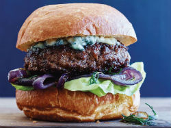

History
The Downtown Diner first opened its doors in November of 1972! Bit and Byte Smith were new to Techieville and discovered an empty building on the corner of 5th and Hypertext Avenue. They always dreamed of opening up their own restaurant. That dream came true in the Fall of 1972 when they purchased the building and began construction on the Downtown Diner. In November of 1972, they were ready to open their doors. They decided to have a grand opening on Thanksgiving Day and offered a free turkey dinner to all who attended. This became a tradition that is still being followed to this day. Every Thanksgiving Day, the Downtown Diner opens its doors and serves a free turkey dinner.
The Downtown Diner first opened its doors in November of 1972! Bit and Byte Smith were new to Techieville and discovered an empty building on the corner of 5th and Hypertext Avenue. They always dreamed of opening up their own restaurant. That dream came true in the Fall of 1972 when they purchased the building and began construction on the Downtown Diner. In November of 1972, they were ready to open their doors. They decided to have a grand opening on Thanksgiving Day and offered a free turkey dinner to all who attended. This became a tradition that is still being followed to this day. Every Thanksgiving Day, the Downtown Diner opens its doors and serves a free turkey dinner.